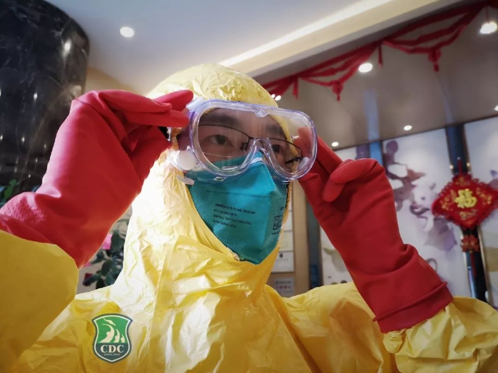
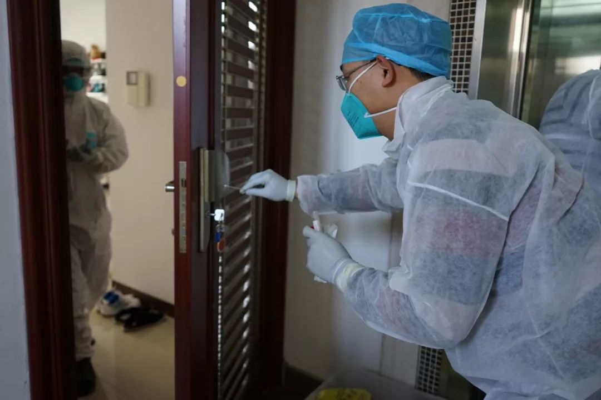
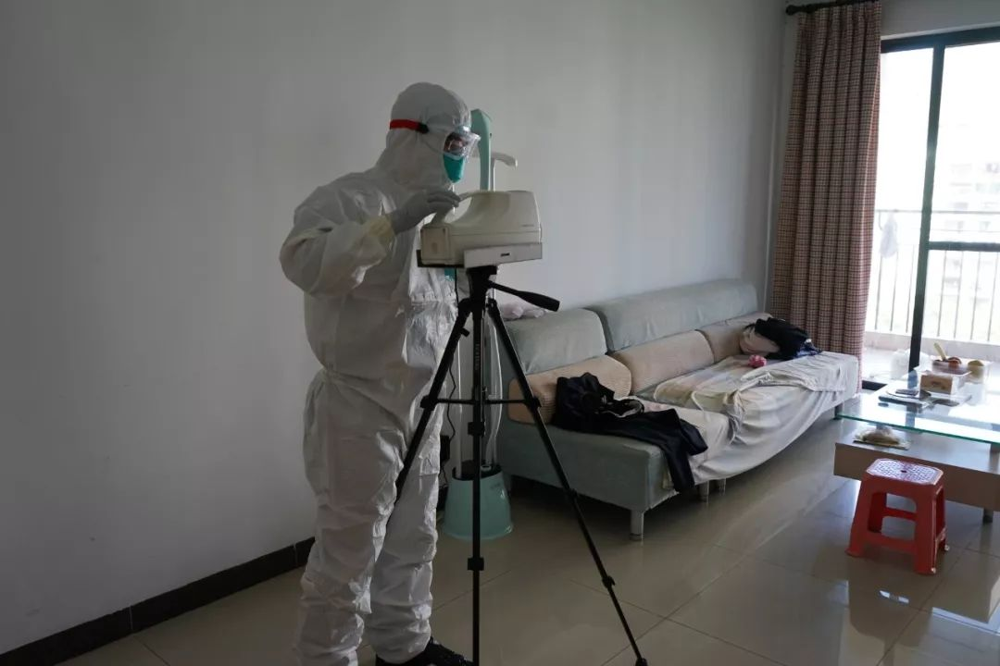

特别报道 | 疾控中心无辜吗？
原文链接 备份链接 记者 | 肖文杰、许冰清 编辑 | 陈 锐 1月30日发表于《新英格兰医学杂志》（NEJM)的一篇关于新冠病毒的论文将中国国家疾控中心变成舆论焦点。 这篇论文名为《新型冠状病毒感染肺炎在中国武汉的初期传播动力学》，由 …

最近几天广州的地铁人流量约为单日100万人，发热率为十万分之一点七到三点五。也就是说，每天在地铁内监测到的发热病人在17人到35人之间，情况相对稳定
“如果未来几天，外地返穗人口增加，那发热人员增加的风险肯定会加大。”
本文首发于南方人物周刊
文 | 张明萌 实习记者 聂阳欣 梁翰文
图 | 广州市疾病预防控制中心
编辑 | 周建平 蒯乐昊
全文约2398字，细读大约需要6分钟

疫情监测组：地铁里的发热率为十万分之一点七至三点五

疫情监测组有46名工作人员，他们需要前往全市发热门诊、交通聚集点和公共场所，对当地工作人员进行培训指导，保证测温工作的进行；与广州各大学校对接，建立完善学校监测与防控体系；对番禺疗养院进行医学观察，这里目前是湖北来穗人员的集中观察点；对动物交易市场、农贸市场进行调查，开展病毒溯源工作。在掌握监测数据后，对全市疫情进行整体分析和风险评估。
疫情监测组组长景钦隆介绍说：“我们的工作主要是布网，把监测网络布全，一旦发现病人进入监测网络，我们马上对接处置。”

疫情监测组在病例家中采样
目前广州市已经实现了地铁、客运站与机场监测的全覆盖。景钦隆曾参与H1N1流感等疫情的抗击工作，他明显感觉到，由于网络的发达和技术的进步，在这次布局监控中各部门间信息跟进与同步非常迅速。
疾控中心开发了电子问卷小程序，监测地点如果发现了发热病人，可扫码填写，监测组由此可实时得知广州市发热人员情况，再由疫情监测组工作人员对接后续发热病人就诊等工作。疾控中心副主任张周斌透露，最近几天广州的地铁人流量约为单日100万人，发热率为十万分之一点七到三点五。也就是说，每天在地铁内监测到的发热病人在17人到35人之间，情况相对稳定。
疫情监测组正在与阿里合作，设计智能AI助理。“如果未来几天，外地返穗人口增加，那发热人员增加的风险肯定会加大。疾控的人力有限，必须借助科技和人工智能的力量来做这件事情。”张周斌说，新的监测手段一个小时可以监测8万份数据量。

疫情监测组在进行空气采样
实验检测组：我们就像拆弹部队
2020年1月6日，广州市疾控中心病免部接到了广东省疾控中心“强化严重急性呼吸道感染病例和野生动物市场环境监测的通知”，1月8日又接到了市卫健委“关于强化不明原因肺炎病例监测的紧急通知”，该部门组织小组成员，研读方案、申请购置试剂，做好监测准备。1月21日凌晨，检测出广州首例和第二例病患。此后标本量逐渐增多，实验检测组加入了更多人力，目前有22位一线工作人员，分为6个小组轮换，确保每天的三轮标本检测。
实验检测组成员苏文哲介绍，1月21日至今，标本数量一直呈上升状态，1月21日市疾控中心收到近百份标本，到了28日，单日样本数已经超过400份。
一批标本的处理分为四个步骤，工作人员做好防护措施，对标本进行编号；提取病毒核酸；针对核酸进行荧光定量的PCR检测；判断结果并上报。处理时间与标本数量有关。30日苏文哲上晚班，和同事一起处理了两百多份标本，结束时已经凌晨5点。
由于实验检测组直接接触病毒标本，风险高，工作人员皆有三级防护（戴医用防护口罩，穿工作服、防护服、隔离衣、鞋套，戴手套、工作帽、防护眼镜、全面型呼吸防护器）。苏文哲回忆说，一开始进实验室的时候心中有压力，“这是一种什么样的病原体，我们对它一无所知，会害怕。”

实验检测组成员在穿戴设备
早期很多医院并不完全清楚应该如何包装一份高风险的感染性标本，送来的标本表面罐甚至有裂开的。实验检测组需要先对罐进行消毒，并完成自我消毒。“我们每天都不知道罐子里到底是什么样子，动作特别慢，我们同事开玩笑，说我们就像拆弹部队。”苏文哲说。
“现在恐惧也不能说完全消除了，只是习惯了，如果这么多天了还是安全的，可能是防护做得对。那我继续这么做下去，应该就没问题了。”
负责组建实验检测组团队的狄飙认为，随着标本量的增加，下一步是将检测任务分摊给广州地区有资质的第三方检测机构和大型医疗机构。
消毒院感组：我觉得呼吸的每一口空气都有病毒
确认病毒标本阳性后，应急处置组会做病例信息收集报告，找寻密切观察点和医学观察点，并汇总给消毒院感组，由其进行病例活动区域的终末消毒。
消毒院感组成员陈宗遒介绍，针对不同物品，会有不同的消毒器械与药品，针对空气使用超低容量喷雾武器和过氧乙酸，针对物体表面用常量喷雾器和含氯消毒剂，还会带上紫外线灯和相关的检测设备确保消毒效果，一次设备能装满一辆小面包车。每次出行有四五人，两个人负责消毒操作，一个人监督与协助工作人员、设备消毒，一个人负责信息登记。

消毒院感组和他们的消毒设备
喷雾器重十公斤左右，上了5至10升的药之后，加上防护服和其他设备，陈宗遒负重超过20公斤。消毒面积80至100平方米，作业时间超过一小时。消毒期间要保证室内封闭，过氧乙酸具有强烈的刺激性，这样的高浓度环境对工作人员造成生理挑战，“它伤害眼睛，导致结膜红肿，眼睛会流泪，喉咙会痛，皮肤会痒。80至100平米的房子，我们有20到30分钟是要在过氧乙醚的熏蒸环境之中。”在操作中，几位成员只能通过轮换作业，来减少刺激。
消毒工作需进入病患生活地点，具有较高风险。消毒院感组成员李晓宁参与了广州首例患者的消毒工作。他回忆，由于对病毒的认知还不够，刚刚到患者家小区已经有些紧张。“感觉呼吸的每一口空气里面都有病毒。但是后面慢慢地处置，相信自己的专业，相信自己的防护，慢慢地心里面就好一些。”
消毒院感组还承担疫情消毒技术指导、对有感染病例的收治定点医院进行院感调查督导工作。
广州市消毒工作主要由各区疾控中心完成，由市疾控中心进行指导培训。当区疾控难以负荷时，由市疾控中心支援。目前，市疾控中心共有18人负责消毒工作，两位人员做备勤，16人分成四组，随时出动。
同时，消毒院感组还承担了医疗机构院感方面的一些工作，不间断走访所有收治病例的医疗机构，观察和调查收治病人的整个流程、病人管理、医务人员个人防护等情况。
1月31日，市疾控中心正式发布通知给区疾控中心，要求各区加强培训，动员区疾控中心下一级的社区卫生服务中心与街道消毒站，培训更多的消毒人员，以应对广州病例可能增大的情况。
新型冠状病毒肺炎专题：


征集疫区真实故事，记录我们的命运
《南方人物周刊》现面向所有新冠肺炎一线的读者征稿，写下你正在经历或亲眼所见的故事。如果你是一线医护人员或其家属，疫区公共服务人员，病患本人或家属，专业人士等等，如果你有故事、有困难、有建言，请让我们知道。我们也同时征集采访对象和新闻线索，留下你的联系方式，我们的记者会同您联系。我们会充分保护受访者的隐私。
隔离疫情，但不隔离爱。写出你的真实故事，你的困境和希望，记录我们共同的命运，围城内外携手共度。
此次征稿形式不限：文字（2000字左右）、图片（原创拍摄）、音频视频（原创录制）
祝愿所有在疫区和不在疫区的朋友们，新春快乐，平安健康。
投稿方式：
1、直接给本篇文章留言，格式为：【线索】+内容+您的电话（留言不会被放出，绝对会对您的个人信息保密）
2、《南方人物周刊》微信公号投稿邮箱：wuhantingzhu@126.com
3、《南方人物周刊》官方微博讨论话题：#我在疫区有话说#
注：请务必保证投稿内容的真实、客观、理性，不造谣，不传谣。
原文链接 备份链接 记者 | 肖文杰、许冰清 编辑 | 陈 锐 1月30日发表于《新英格兰医学杂志》（NEJM)的一篇关于新冠病毒的论文将中国国家疾控中心变成舆论焦点。 这篇论文名为《新型冠状病毒感染肺炎在中国武汉的初期传播动力学》，由 …
原文链接 备份链接 【财新网】（记者 黄蕙昭 综合）2020年的第一个月在争议中迈向尾声。防疫战滚滚硝烟下，“防控”和“救援”条线上的两大职能主体，今日正面临激烈的失职指控：一面是疾控中心发文披露新冠病毒早期流行病学数据，似早已获悉“人 …
原文链接 备份链接 试剂盒的供给端产量充足，并非“供不应求”，而是卡在了春节运力紧张、高门槛的检测条件、以及相关药品资质的审批上。为此，国家药监局已于近日开启快速审批通道。 记者 | 黄子懿 严岩 除夕夜：12万人份的试剂盒 ▲▲▲ 1 …
原文链接 备份链接 【财新网】（记者 黄姝伦 赵今朝）新型冠状病毒感染肺炎疫情还在爆发式增长，武汉1月23日上午10点宣布交通封城。官方披露，截至1月23日24时，全国确诊病例达850例， 26例死亡绝大部分集中在武汉市，其中河北省出现首 …
原文链接 备份链接 【财新网】（记者 刘登辉）截至1月22日，全国新型冠状病毒确诊案例已达548例。病例数量近几日迅速增加，34个省级行政单位仅有新疆、西藏、青海、甘肃、内蒙古、陕西未出现确诊和疑似案例。防控形势十分危急。值得关注的是， …